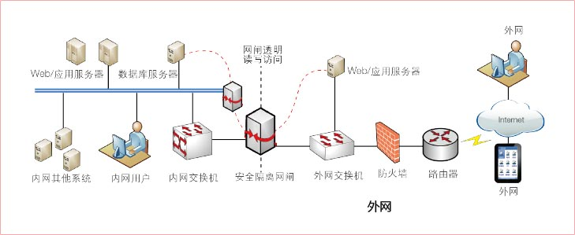
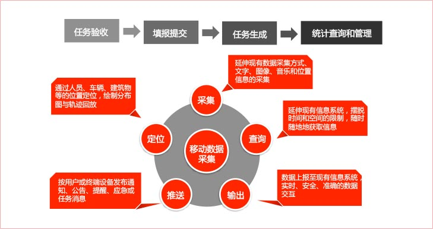
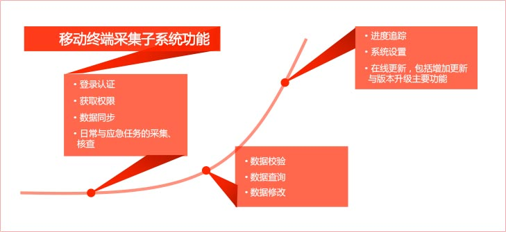

移动终端应用分析
传统的数据采集方式的问题
- 依赖于纸质表格和手工填报，之后输入至相关的计算机系统。这样的操作方式存在很多问题，如手段单一、数据传递不及时、无法确认数据采集的地理位置、时间等。
- 数据质量难以保证。
- 数据采集的过程无法监控。
- 大量繁杂的事后录入工作，不但增加了工作量，录入错误的几率也很高。
传统数据获取方式的问题
- 要求复杂的数据交互，同时兼顾现场数据查询和数据录入。
- 需要固定场所、固定布局的企业和政府信息化建设。
- 人们需要在企业、政府的内网完成数据查询与阅览。而随时随地的获取所需信息至关重要。人们不可能将海量数据带在身边，尤其是当这些数据存储在内网的数据库中的时候。
数据采集解决方案

简要流程

主要功能
